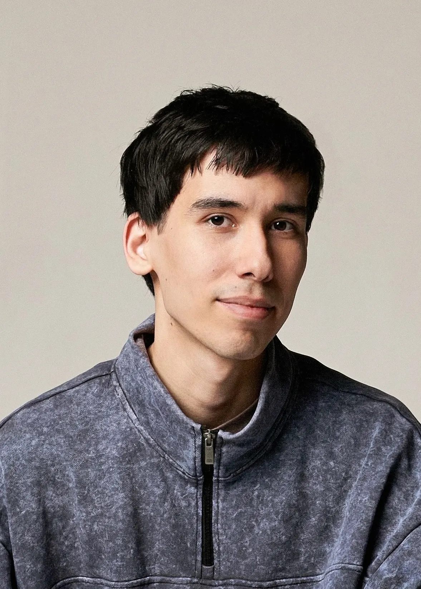

Rustam Mushraipov — independent art director & designer specialized in communication design, identity, and 3d graphics.
Independent Designer
Aurora Tech Award by inDrive: 3d motion for the Top 10 announcement teaser and the design of the winners’ trophy, awarded at the 2026 ceremony in Santiago, Chile.
Yandex Go: a 3d gamepad icon for Yandex Games, remodelled from scratch in Plasticity with the ro—jo studio, and 3d onboarding renders for the power-bank rental launch.
Yandex Edadeal: turned the 2d logo into a rigged 3d character for a product with 55M+ installs, documented the rig in a Figma guide for the client’s team, and produced regular renders and campaign visuals with it.
Teaching Assistant and Course Author
Highlighter course: recorded all 11 lessons on modelling a marker in Plasticity and rendering it in Blender and Cinema 4D.
Alchemy course: exercise examples, short how-to videos, technical help for students, and generative setups rebuilt from Cinema 4D in Blender, first as an assistant, then as co-curator.
Communication Designer
Dodo Pizza Dubai: a partnership deck built as an editable Google Slides template the team adapts for new partners.
Digital ads, enamel pins, and restaurant materials for Dodo Pizza.
3d Designer
Built a Figma library of stylized 3d illustrations that the in-house UI/UX and communication designers used to assemble site pages, posts, and banners on their own.
Detailed 3d covers for the lessons in the app.
Lead Designer
Ipak Yuli Bank: developed a 3d visual language for a bank serving 2.5M customers. It spread from social media to web banners, app push notifications, and billboards.
Set up the daily production pipeline and trained an intern to take it over. Contributed to 13× growth in average monthly organic reach.
Moved the agency’s designers and client projects from Photoshop to Figma.
Communication Designer
Social media, key visuals, and motion as part of the agency team, including work for Pochta Bank and Rappoport Restaurants.
Graphic Designer
Social media design for banks, including Tenge Bank and Hamkor Bank.
Expertise
Competencies: art direction, communication design, 3d illustration and motion, 3d characters.
Tools: Blender, Cinema 4D + Redshift, Plasticity, Figma, Photoshop, Illustrator, After Effects.
Languages: Russian and Uzbek (native), English (working proficiency).
Rustam Mushraipov © 2026